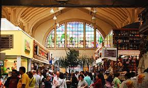

Explore a beleza de uma cidade cosmopolita!
Parque do Ibirapuera
Um dos mais famosos da capital paulista. Considerado o quintal dos paulistanos, encanta pela natureza e pela variedade de atrações gratuitas
Museu do Ipiranga
Museu público mais antigo da cidade de São Paulo, é o mais importante museu da Universidade de São Paulo e um dos mais visitados da capital paulista.
Catedral da Sé
A catedral é a mais alta igreja de São Paulo, com duas torres com 92 metros de altura e uma enorme cúpula. Vale a pena vir ao centro de São Paulo e explorar seu interior.
Memorial da Am. Latina
Inaugurado em 1989 e projetado por Niemeyer, é um monumento à integração cultural, política, econômica e social da América Latina.
Museu de Arte de SP

Fundado em 1947, o museu possui um acervo de 10 mil obras, porém nem todas já foram expostas no MASP, como uma armadura de cobre e aço de 1480.
Mercado Municipal
Aqui é possível encontrar verduras e frutas fresquinhas além de um espaço gastronômico para degustar saborosos pratos, enquanto se aprecia a beleza arquitetônica do Mercadão.